桃巌寺/愛知県名古屋市
（前編）
名古屋市千種区にある桃巌寺は織田信長の弟、信行が織田信長の父、信秀のために建立した曹洞宗の寺である。
ここは密かな紅葉の名所だったりもする。
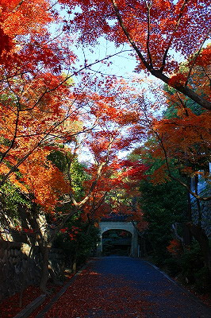
季節は晩秋。燃えるような紅葉だ。 |
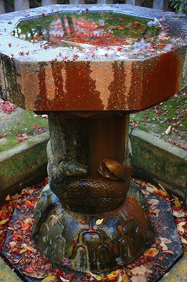 |
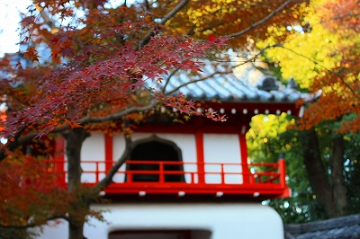 |
柄にもなく小さな秋を見つけたりしてみる。
|
手水鉢に紅葉が浮いている。
ああ、風流なり〜とか思っていたら、ゲ！台座が蛇じゃん。で、その下のトーナメント表みたいなの何？
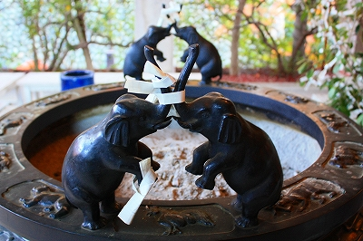
象さんが向かい合わせに立っている香炉に今後の展開が見え隠れ。
燃えるような木々の合間からはチラッチラッと「あるモノ」が見え隠れしているが、それは後程たっぷりでっぷり触れるとして、今は本堂に進もうではないか。
ここ桃厳寺の拝観料は決して安くない。
それは何故かというと…それも後程どっぷりがっぷり触れるとして今は拝観料を払っておこうではないか。
本堂に入る直前に丁度出てくる人と入れ違いになった。すれ違いざまに「拝観料が高い」的なことを仰っていたような気がしたが、今思えば幻聴だったのかも知れない。だって結果からいうと凄く面白かったもん。
本堂の一画に金ぴかの仏像が安置されている。
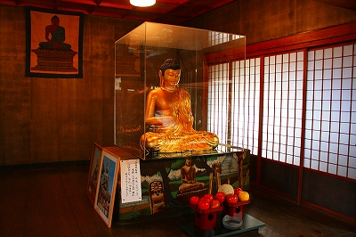
「とある仏像」のミニチュアなのだが、その件については後々語ることになろう。
仏像の脇に、その「とある仏像」の写真が立て掛けられているような気もするが、見なかったことにしていただきたい。
そしてこのお寺ご自慢の巨大木魚。
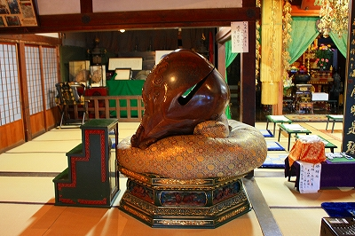
あまりに大きいので階段を上って叩くのである。
この木魚、片手で触れるだけでも過去の罪障が消滅する、とのこと。
おおお、そうか！
とゆー事は小学校のときに親の財布から小銭をくすねた事もチャラ？それといい年の大人になってから神聖なるお寺や仏像を笑いものにして、あまつさえそれをサイトで公開したり…ってそれはネタにされるお寺サイドの問題じゃん！
あと恐がる愚息共を無理矢理地獄巡りに連れてったり、あとは、え〜と、え〜と…あ、ホントにマズイ事はココでは書けません…というわけでこれまで山の如く積み重ねてきた有象無象の罪障（と思われる類の事象）を片手一発で消してやりましたわい！えっへん！
木魚の上には額に入った写真が。
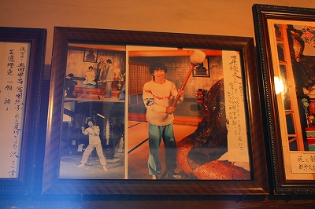
おお、トシちゃんじゃないの！
昭和58年1月にここからザ・ベストテンを生中継したそうで。その際の巨大木魚とのツーショット。
トシちゃんもあんな罪障やこんな罪障をここで吹っ飛ばしたわけだね。
調べてみるとこの時期リリースしていたのはラブ・シュプールという曲だそうで…全然知らないよ、トシちゃん！
と思ってたらなんと残ってました。トシちゃんの雄姿！
御住職の食い気味コメントがすべてを物語ってるような気がして、あたしゃ好きです。
で、その御住職に説明を受けつつ、さらに奥へ。
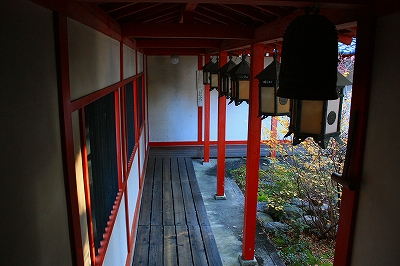
廊下を渡った先には辯才殿と呼ばれる建物がある。
いきなり半裸の女性がお出迎え。
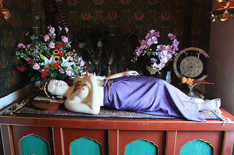
秘仏ねむり辯天サマだそうです。
この先18禁の秘宝館チックなエリアになっている。
えと確か撮影禁止だったような気がするが御住職が「あ、別にいいよ」と言ってくれたのでバシバシ激写させてもらいました。
で、その先はこんな感じ。
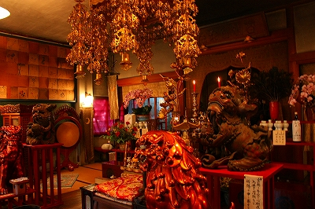
一応お寺の体をなしてはいるが良く見ると性神全開となっている辯才殿。
しかし温泉街の秘宝館と違い、興味本位のネタ的展示ではなくあくまでも信仰の対象、というスタンスは崩していない。
従っておふざけ感はあまりない。
でもね…やっぱり可笑しいんだなあ。
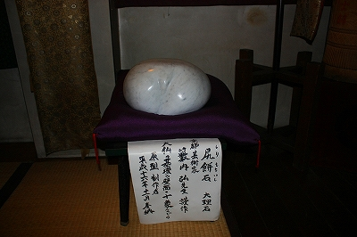
薄い紗がかかった祭壇には様々な仏像、神像が並んでいる。
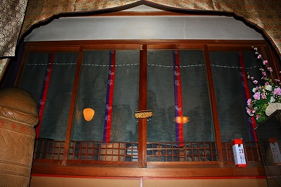
※カーソルを画像にあわせると良く見えるかも
裸辯天や木彫りの金精様などが所狭しと並んでいて性信仰のミュージアムのようだ。
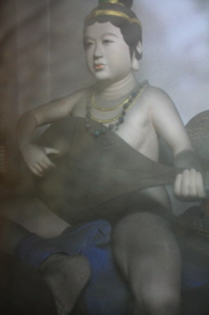 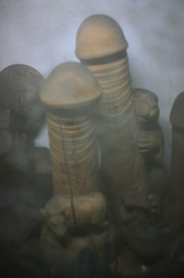
あとこんな感じの。うむ〜、思わずマジで見入ってしまう。流石に↓これはインポッシブルなのでは…
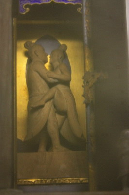 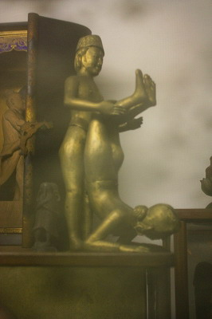
日本の男根信仰とチベット仏教の性神が渦巻くセンスオブ昭和全開な展示。
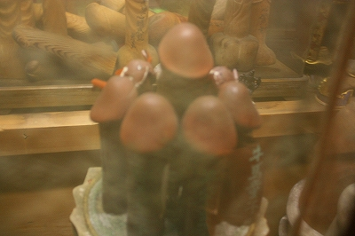 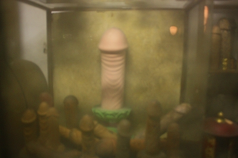
あ、ちゃんとした辯才天サマも祀られてます。
芸事の上達に御利益あり、ということで芸能人も結構訪れているそうで。
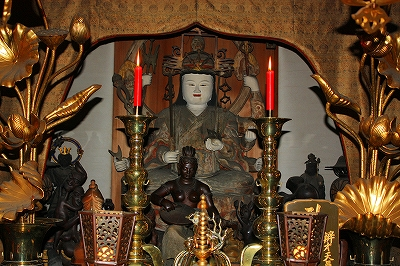
屋上には奇妙な塔が建っている。
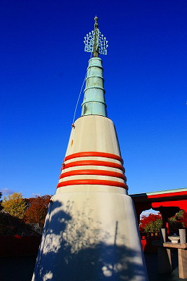
中を覗くと…
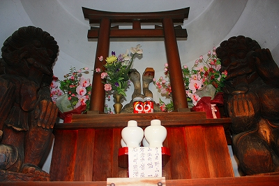
左右に奇妙な木彫像、バリ島のお土産かと思ったらラマ（チベット仏教のことね）仏だそうで。
中央には二匹の絡みついた蛇が祀られている。
白竜霊神とされているが、宇賀神サマつまり辯才天の頭の上に載ってるトグロを巻いたカミサマを連想させる。
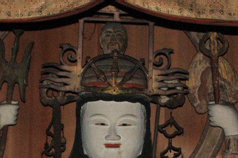
↑先程の辯才天の頭上にも、ホラ。
元々この宇賀神サマは神道のカミサマだったという、ヒンズーのサラスヴァティ神が日本に辯才天として輸入された際、何故か頭の上にパイルダーオンされてしまったようだ。
だから日本には宇賀神サマを頭上に乗せたタイプと半裸で琵琶を持っている2タイプの辯天サマがいるのだ。
前者の蛇被りタイプの辯天サマはどっちかというとシヴァ神に近い気がするのだが、そこんとこどうなんでしょ。
さて、秘宝館、じゃなくて辯才殿はこんな感じ。でもお楽しみはまだまだ続くのだ！
後編へGO！
珍寺大道場 HOME